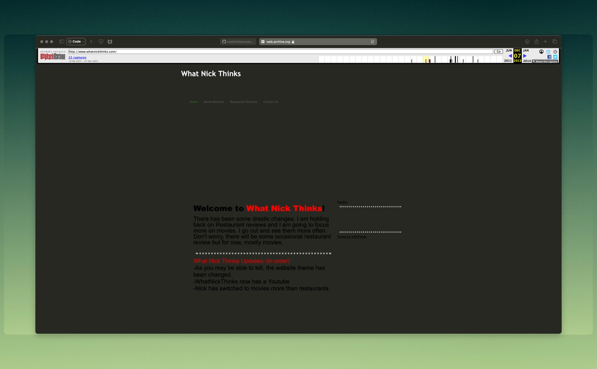
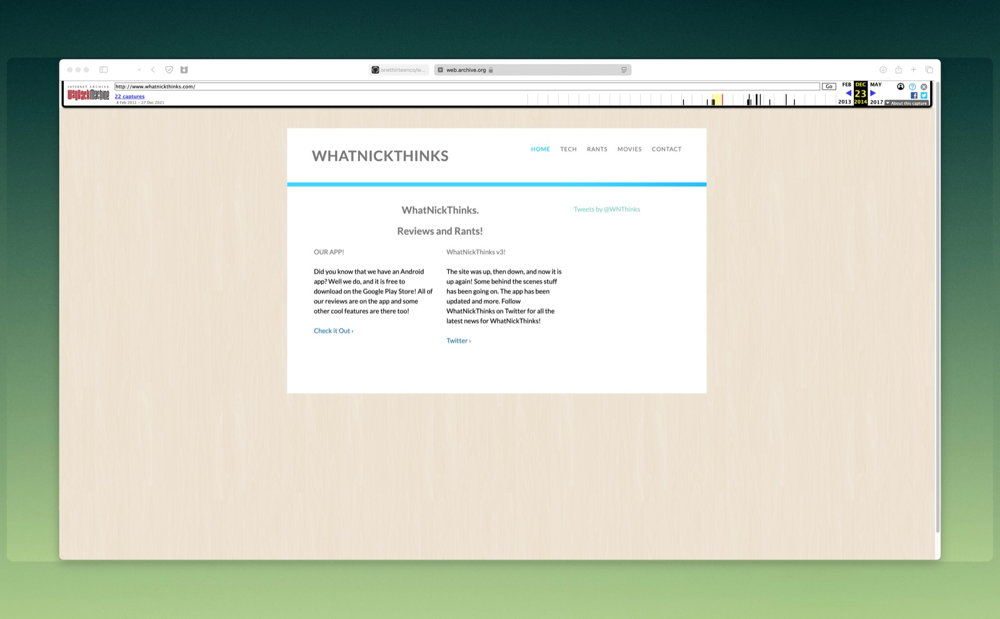

Google Sites
2008–2009
-
The start of WhatNickThinks came after visiting a restaurant called Buckley's Tavern. After having subpar buffalo wings, the idea to create a review site was born. Shortly after, WhatNickThinks was born on a Google Sites page posting restaurant reviews on the homepage.
Lost to time
-
Lost to time
Yola
2010–2014
WhatNickThinks.
-
WhatNickThinks operated largely in the background until the move to Yola for hosting and design. Despite this move, WhatNickThinks was clouded by another site, NicksPicks, which featured flash games and other useful gaming tips. Nevertheless, WhatNickThinks remained active, forgoing the paragraph dumping on the homepage in favor of structured blog posts.
Lost to time
-
Lost to time
-
The domain WhatNickThinks.
com was purchased. After NicksPicks lost its steam, WhatNickThinks was moved to the forefront, becoming our first site to feature a full domain. At this time, the decision was made to stop writing restaurant reviews in favor of film and television reviews, a decision that remained in place until WhatNickThinks' eventual shutdown. Lost to time
-

The homepage, December 2013
The site's design from December 2013, showcasing the early Yola-based layout. I'm not convinced the website shipped like this, but you never know.
Wayback Machine capture, 7 December 2013
-

The homepage, December 2014
The final iteration of WhatNickThinks on Yola.
Wayback Machine capture, 23 December 2014


Squarespace
2015–2018
WhatNickThinks.
-
After five years on Yola, the decision was made to switch to Squarespace, largely because of their template designs and site-builder capabilities. It also felt shiny and new. Seriously.

The logo, 2015
The WhatNickThinks logo from 2015, the final design before beginning the transition to Squarespace for design.
Preserved by the Internet Archive

The feature image, 2015
Feature image from 2015 that was used across social media channels and blog articles.
Preserved by the Internet Archive
-
Lost to time
-
Lost to time
-
Lost to time
The letter
2019–2021
WhatNickThinks.
-
WhatNickThinks continued to post film and television reviews for some time, eventually branching into video game reviews and entertainment news. Despite the occasional popular post, WhatNickThinks failed to reach readers consistently and was ultimately shut down.
After shutting down, a farewell letter, "Hello, old friend," was posted. It remained until the domain lapsed.
-
Lost to time
-
Lost to time
Domain lapsed
2022–2023
-
The WhatNickThinks.
com domain registration lapsed. Lost to time
-
Lost to time
One Thirteen
2024–2026
-
One Thirteen bought back the WhatNickThinks.
com domain name and republished the "Hello, old friend," letter. -
Lost to time
-
WhatNickThinks returns with its new brand and identity.